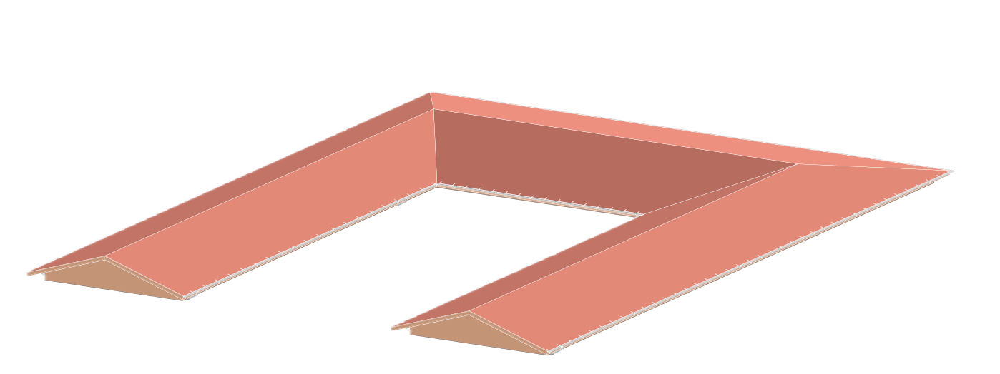
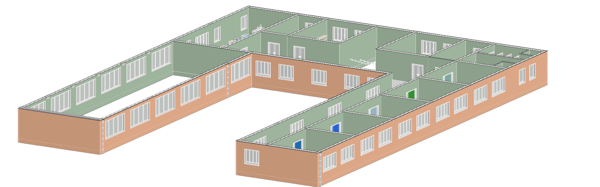
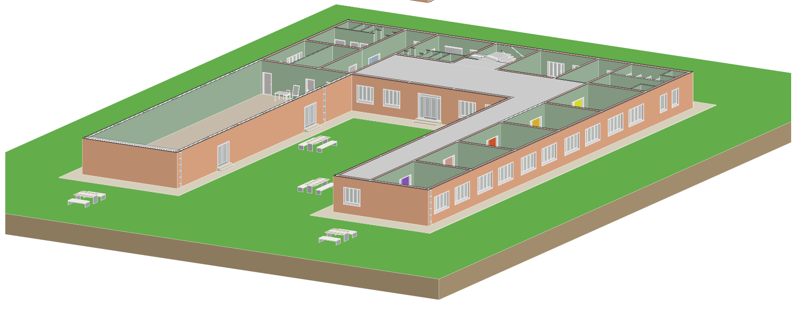

Progetto 01 Architettura
Scuola Primaria
Scuola Primaria
Cromatica
Una scuola elementare dove il colore diventa linguaggio e strumento di orientamento. Le porte colorate rendono le aule più facili da riconoscere; le grandi arcate a vista della palestra valorizzano uno spazio luminoso, mentre le sedie di colori diversi nell’aula d’arte invitano alla creatività e all’espressione personale.
Scorri per esplorare
Da chiusa,
la scuola si apre.
Tre livelli si separano e raccontano il progetto dall’alto verso gli spazi che lo compongono.
- 01 Copertura
- 02 Spazi interni
- 03 Spazi esterni



Dentro il progetto Spazi interni
La scuola dall’interno.
Spazio predisposto per i render degli ambienti interni.
+Render da inserire
+Render da inserire
+Render da inserire
Un progetto pensato per crescere con chi lo abita: inclusivo, accogliente e a misura di bambino.